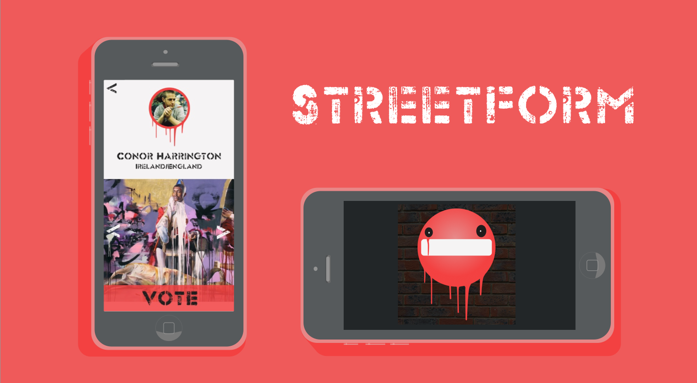

Streetform is a project that uses street art as a platform to deliver the stories your city wants to talk about every month! By downloading the app you can vote each month for the topic that interests you and which artist you want to create the piece.
We were tasked with visualising the delivery platform of the publications whilst considering elements such as content, audience, platform and frequency. For my idea I created the concept of ‘Streetform.’ Content: News stories/ topics of interest Audience:18-25 Platform: Street Art Frequency: Monthly  Once the artist and topic has been voted upon, the users can then follow the map tool in the app to find the location of the work. The map feature uses street view imagery to create a visual guide, not only of the current Streetform piece but also to more street art around the city. Keep up to date with what topics are being voted for via the piechart using real time to update the results.